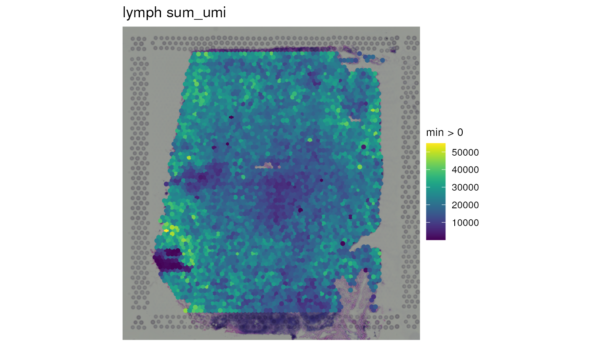

vignettes/TenX_data_download.Rmd
TenX_data_download.RmdspatialLIBD
R is an open-source statistical environment which can be
easily modified to enhance its functionality via packages. spatialLIBD
(Pardo, Spangler, Weber, Hicks, Jaffe, Martinowich, Maynard, and
Collado-Torres, 2022) is an R package available via the Bioconductor repository for packages.
R can be installed on any operating system from CRAN after which you can install
spatialLIBD
by using the following commands in your R session:
if (!requireNamespace("BiocManager", quietly = TRUE)) {
install.packages("BiocManager")
}
BiocManager::install("spatialLIBD")
## Check that you have a valid Bioconductor installation
BiocManager::valid()To run all the code in this vignette, you might need to install other R/Bioconductor packages, which you can do with:
BiocManager::install("spatialLIBD", dependencies = TRUE, force = TRUE)If you want to use the development version of
spatialLIBD, you will need to use the R version
corresponding to the current Bioconductor-devel branch as described in
more detail on the Bioconductor
website. Then you can install spatialLIBD from GitHub
using the following command.
BiocManager::install("LieberInstitute/spatialLIBD")Please first check the Introduction to spatialLIBD vignette available through GitHub or Bioconductor.
spatialLIBD
We hope that spatialLIBD will be useful for your research. Please use the following information to cite the package and the overall approach. Thank you!
## Citation info
citation("spatialLIBD")
#>
#> To cite package 'spatialLIBD' in publications use:
#>
#> Pardo B, Spangler A, Weber LM, Hicks SC, Jaffe AE, Martinowich K,
#> Maynard KR, Collado-Torres L (2022). "spatialLIBD: an R/Bioconductor
#> package to visualize spatially-resolved transcriptomics data." _BMC
#> Genomics_. doi:10.1186/s12864-022-08601-w
#> <https://doi.org/10.1186/s12864-022-08601-w>,
#> <https://doi.org/10.1186/s12864-022-08601-w>.
#>
#> Maynard KR, Collado-Torres L, Weber LM, Uytingco C, Barry BK,
#> Williams SR, II JLC, Tran MN, Besich Z, Tippani M, Chew J, Yin Y,
#> Kleinman JE, Hyde TM, Rao N, Hicks SC, Martinowich K, Jaffe AE
#> (2021). "Transcriptome-scale spatial gene expression in the human
#> dorsolateral prefrontal cortex." _Nature Neuroscience_.
#> doi:10.1038/s41593-020-00787-0
#> <https://doi.org/10.1038/s41593-020-00787-0>,
#> <https://www.nature.com/articles/s41593-020-00787-0>.
#>
#> Huuki-Myers LA, Spangler A, Eagles NJ, Montgomergy KD, Kwon SH, Guo
#> B, Grant-Peters M, Divecha HR, Tippani M, Sriworarat C, Nguyen AB,
#> Ravichandran P, Tran MN, Seyedian A, Consortium P, Hyde TM, Kleinman
#> JE, Battle A, Page SC, Ryten M, Hicks SC, Martinowich K,
#> Collado-Torres L, Maynard KR (2023). "Integrated single cell and
#> unsupervised spatial transcriptomic analysis defines molecular
#> anatomy of the human dorsolateral prefrontal cortex." _bioRxiv_.
#> doi:10.1101/2023.02.15.528722
#> <https://doi.org/10.1101/2023.02.15.528722>,
#> <https://www.biorxiv.org/content/10.1101/2023.02.15.528722v1>.
#>
#> Kwon SH, Parthiban S, Tippani M, Divecha HR, Eagles NJ, Lobana JS,
#> Williams S, Mak M, Yu G, Avalos-Gracia J, Bharadwaj RA, Kleinman JE,
#> Hyde TM, Page SC, Hicks SC, Martinowich K, Maynard KR, Collado-Torres
#> L (2023). "Influence of Alzheimer’s disease related neuropathology on
#> local microenvironment gene expression in the human inferior temporal
#> cortex." _bioRxiv_. doi:10.1101/2023.04.TODO
#> <https://doi.org/10.1101/2023.04.TODO>,
#> <https://www.biorxiv.org/content/10.1101/2023.04.TODO>.
#>
#> To see these entries in BibTeX format, use 'print(<citation>,
#> bibtex=TRUE)', 'toBibtex(.)', or set
#> 'options(citation.bibtex.max=999)'.In this vignette we’ll show you how you can use spatialLIBD (Pardo, Spangler, Weber et al., 2022) for exploring spatially resolved transcriptomics data from the Visium platform by 10x Genomics. That is, you will learn how to use spatialLIBD for data beyond the one it was initially developed for (Maynard, Collado-Torres, Weber, Uytingco, Barry, Williams, II, Tran, Besich, Tippani, Chew, Yin, Kleinman, Hyde, Rao, Hicks, Martinowich, and Jaffe, 2021). To illustrate these steps, we will use data that 10x Genomics made publicly available at https://support.10xgenomics.com/spatial-gene-expression/datasets. We will use files from the human lymph node example publicly available at https://support.10xgenomics.com/spatial-gene-expression/datasets/1.1.0/V1_Human_Lymph_Node.
To get started, lets load the different packages we’ll need for this vignette. Here’s a brief summary of why we need these packages:
spaceranger files provided by 10x
Genomics
## Load packages in the order we'll use them next
library("BiocFileCache")
library("SpatialExperiment")
library("rtracklayer")
library("lobstr")
library("spatialLIBD")Next we download data from 10x Genomics available from the human
lymph node example, available at https://support.10xgenomics.com/spatial-gene-expression/datasets/1.1.0/V1_Human_Lymph_Node.
We don’t need to download all the files listed there since SpatialExperiment
doesn’t need all of them for importing the data into R. These files are
part of the output that gets generated by spaceranger which
is the processing pipeline provided by 10x Genomics for Visium data.
We’ll use BiocFileCache to keep the data in a local cache in case we want to run this example again and don’t want to re-download the data from the web.
## Download and save a local cache of the data provided by 10x Genomics
bfc <- BiocFileCache::BiocFileCache()
lymph.url <-
paste0(
"https://cf.10xgenomics.com/samples/spatial-exp/",
"1.1.0/V1_Human_Lymph_Node/",
c(
"V1_Human_Lymph_Node_filtered_feature_bc_matrix.tar.gz",
"V1_Human_Lymph_Node_spatial.tar.gz",
"V1_Human_Lymph_Node_analysis.tar.gz"
)
)
lymph.data <- sapply(lymph.url, BiocFileCache::bfcrpath, x = bfc)10x Genomics provides the files in compressed tarballs
(.tar.gz file extension). Which is why we’ll need to use
utils::untar() to decompress the files. This will create
new directories and we will use list.files() to see what
files these directories contain.
## Extract the files to a temporary location
## (they'll be deleted once you close your R session)
xx <- sapply(lymph.data, utils::untar, exdir = file.path(tempdir(), "outs"))
## The names are the URLs, which are long and thus too wide to be shown here,
## so we shorten them to only show the file name prior to displaying the
## utils::untar() output status
names(xx) <- basename(names(xx))
xx
#> V1_Human_Lymph_Node_filtered_feature_bc_matrix.tar.gz.BFC1
#> 0
#> V1_Human_Lymph_Node_spatial.tar.gz.BFC2
#> 0
#> V1_Human_Lymph_Node_analysis.tar.gz.BFC3
#> 0
## List the files we downloaded and extracted
## These files are typically SpaceRanger outputs
lymph.dirs <- file.path(
tempdir(), "outs",
c("filtered_feature_bc_matrix", "spatial", "raw_feature_bc_matrix", "analysis")
)
list.files(lymph.dirs)
#> [1] "aligned_fiducials.jpg" "barcodes.tsv.gz"
#> [3] "clustering" "detected_tissue_image.jpg"
#> [5] "diffexp" "features.tsv.gz"
#> [7] "matrix.mtx.gz" "pca"
#> [9] "scalefactors_json.json" "tissue_hires_image.png"
#> [11] "tissue_lowres_image.png" "tissue_positions_list.csv"
#> [13] "tsne" "umap"Now that we have the files that we need, we can import the data into
R using read10xVisium() from SpatialExperiment.
We’ll import the low resolution histology images produced by
spaceranger using the images = "lowres" and
load = TRUE arguments. We’ll also load the filtered gene
expression data using the data = "filtered" argument. The
count matrix can still be quite large, which is why we’ll use the
type = "sparse" argument to load the data into an R object
that is memory-efficient for sparse data.
## Import the data as a SpatialExperiment object
spe <- SpatialExperiment::read10xVisium(
samples = tempdir(),
sample_id = "lymph",
type = "sparse", data = "filtered",
images = "lowres", load = TRUE
)
#> 'as(<dgTMatrix>, "dgCMatrix")' is deprecated.
#> Use 'as(., "CsparseMatrix")' instead.
#> See help("Deprecated") and help("Matrix-deprecated").
## Inspect the R object we just created: class, memory, and how it looks in
## general
class(spe)
#> [1] "SpatialExperiment"
#> attr(,"package")
#> [1] "SpatialExperiment"
lobstr::obj_size(spe) / 1024^2 ## Convert to MB
#> 281.90 B
spe
#> class: SpatialExperiment
#> dim: 36601 4035
#> metadata(0):
#> assays(1): counts
#> rownames(36601): ENSG00000243485 ENSG00000237613 ... ENSG00000278817
#> ENSG00000277196
#> rowData names(1): symbol
#> colnames(4035): AAACAAGTATCTCCCA-1 AAACAATCTACTAGCA-1 ...
#> TTGTTTGTATTACACG-1 TTGTTTGTGTAAATTC-1
#> colData names(4): in_tissue array_row array_col sample_id
#> reducedDimNames(0):
#> mainExpName: NULL
#> altExpNames(0):
#> spatialCoords names(2) : pxl_col_in_fullres pxl_row_in_fullres
#> imgData names(4): sample_id image_id data scaleFactor
## The counts are saved in a sparse matrix R object
class(counts(spe))
#> [1] "dgCMatrix"
#> attr(,"package")
#> [1] "Matrix"Now that we have an SpatialExperiment R object
(spe) with the data from 10x Genomics for the human lymph
node example, we need to add a few features to the R object in order to
create the interactive website using
spatialLIBD::run_app(). These additional elements power
features in the interactive website that you might be interested in.
First we start with adding a few variables to the sample information
table (colData()) of our spe object. We
add:
key: this labels each spot with a unique identifier. We
combine the sample ID with the spot barcode ID to create this unique
identifier.sum_umi: this continuous variable contains the total
number of counts for each sample prior to filtering any genes.sum_gene: this continuous variable contains the number
of genes that have at least 1 count.
## Add some information used by spatialLIBD
spe <- add_key(spe)
spe$sum_umi <- colSums(counts(spe))
spe$sum_gene <- colSums(counts(spe) > 0)The files SpatialExperiment::read10xVisium() uses to
read in the spaceranger outputs into R do not include much
information about the genes, such as their chromosomes, coordinates, and
other gene annotation information. We thus recommend that you read in
this information from a gene annotation file: typically a
gtf file. For a real case scenario, you’ll mostly likely
have access to the GTF file provided by 10x Genomics. However, we cannot
download that file without downloading other files for this example.
Thus we’ll show you the code you would use if you had access to the GTF
file from 10x Genomics and also show a second approach that works for
this vignette.
## Initially we don't have much information about the genes
rowRanges(spe)
#> GRangesList object of length 36601:
#> $ENSG00000243485
#> GRanges object with 0 ranges and 0 metadata columns:
#> seqnames ranges strand
#> <Rle> <IRanges> <Rle>
#> -------
#> seqinfo: no sequences
#>
#> $ENSG00000237613
#> GRanges object with 0 ranges and 0 metadata columns:
#> seqnames ranges strand
#> <Rle> <IRanges> <Rle>
#> -------
#> seqinfo: no sequences
#>
#> $ENSG00000186092
#> GRanges object with 0 ranges and 0 metadata columns:
#> seqnames ranges strand
#> <Rle> <IRanges> <Rle>
#> -------
#> seqinfo: no sequences
#>
#> ...
#> <36598 more elements>Depending on the version of spaceranger you used, you
might have used different GTF files 10x Genomics has made available at
https://support.10xgenomics.com/single-cell-gene-expression/software/downloads/latest
and described at https://support.10xgenomics.com/single-cell-gene-expression/software/release-notes/build.
These files are too big though and we won’t download them in this
example. For instance, References - 2020-A (July 7, 2020) for
Human reference (GRCh38) is 11 GB in size and contains files we
do not need for this vignette. If you did have the file locally, you
could use the following code to read in the GTF file prepared by 10x
Genomics and add the information into your spe object that
SpatialExperiment::read10xVisium() does not include.
For example, in our computing cluster this GTF file is located at the following path and is 1.4 GB in size:
$ cd /dcs04/lieber/lcolladotor/annotationFiles_LIBD001/10x/refdata-gex-GRCh38-2020-A
$ du -sh --apparent-size genes/genes.gtf
1.4G genes/genes.gtfIf you have the GTF file from 10x Genomics, we show next how you can
read the information into R, match it appropriately with the information
in the spe object and add it back into the spe
object.
## You could:
## * download the 11 GB file from
## https://cf.10xgenomics.com/supp/cell-exp/refdata-gex-GRCh38-2020-A.tar.gz
## * decompress it
## Read in the gene information from the annotation GTF file provided by 10x
gtf <-
rtracklayer::import(
"/path/to/refdata-gex-GRCh38-2020-A/genes/genes.gtf"
)
## Subject to genes only
gtf <- gtf[gtf$type == "gene"]
## Set the names to be the gene IDs
names(gtf) <- gtf$gene_id
## Match the genes
match_genes <- match(rownames(spe), gtf$gene_id)
## They should all be present if you are using the correct GTF file from 10x
stopifnot(all(!is.na(match_genes)))
## Keep only some columns from the gtf (you could keep all of them if you want)
mcols(gtf) <-
mcols(gtf)[, c(
"source",
"type",
"gene_id",
"gene_version",
"gene_name",
"gene_type"
)]
## Add the gene info to our SPE object
rowRanges(spe) <- gtf[match_genes]
## Inspect the gene annotation data we added
rowRanges(spe)In this vignette, we’ll use the GTF file from Gencode v32. That’s
because the build notes from References - 2020-A (July 7, 2020)
and Human reference, GRCh38 (GENCODE v32/Ensembl 98) at https://support.10xgenomics.com/single-cell-gene-expression/software/release-notes/build#GRCh38_2020A
show that 10x Genomics used Gencode v32. They also used Ensembl version
98 which is why a few genes we have in our object are going to be
missing. We show next how you can read the information into R, match it
appropriately with the information in the spe object and
add it back into the spe object.
## Download the Gencode v32 GTF file and cache it
gtf_cache <- BiocFileCache::bfcrpath(
bfc,
paste0(
"ftp://ftp.ebi.ac.uk/pub/databases/gencode/Gencode_human/",
"release_32/gencode.v32.annotation.gtf.gz"
)
)
## Show the GTF cache location
gtf_cache
#> BFC4
#> "/github/home/.cache/R/BiocFileCache/36754084bc5_gencode.v32.annotation.gtf.gz"
## Import into R (takes ~1 min)
gtf <- rtracklayer::import(gtf_cache)
## Subset to genes only
gtf <- gtf[gtf$type == "gene"]
## Remove the .x part of the gene IDs
gtf$gene_id <- gsub("\\..*", "", gtf$gene_id)
## Set the names to be the gene IDs
names(gtf) <- gtf$gene_id
## Match the genes
match_genes <- match(rownames(spe), gtf$gene_id)
table(is.na(match_genes))
#>
#> FALSE TRUE
#> 36572 29
## Drop the few genes for which we don't have information
spe <- spe[!is.na(match_genes), ]
match_genes <- match_genes[!is.na(match_genes)]
## Keep only some columns from the gtf
mcols(gtf) <- mcols(gtf)[, c("source", "type", "gene_id", "gene_name", "gene_type")]
## Add the gene info to our SPE object
rowRanges(spe) <- gtf[match_genes]
## Inspect the gene annotation data we added
rowRanges(spe)
#> GRanges object with 36572 ranges and 5 metadata columns:
#> seqnames ranges strand | source type
#> <Rle> <IRanges> <Rle> | <factor> <factor>
#> ENSG00000243485 chr1 29554-31109 + | HAVANA gene
#> ENSG00000237613 chr1 34554-36081 - | HAVANA gene
#> ENSG00000186092 chr1 65419-71585 + | HAVANA gene
#> ENSG00000238009 chr1 89295-133723 - | HAVANA gene
#> ENSG00000239945 chr1 89551-91105 - | HAVANA gene
#> ... ... ... ... . ... ...
#> ENSG00000212907 chrM 10470-10766 + | ENSEMBL gene
#> ENSG00000198886 chrM 10760-12137 + | ENSEMBL gene
#> ENSG00000198786 chrM 12337-14148 + | ENSEMBL gene
#> ENSG00000198695 chrM 14149-14673 - | ENSEMBL gene
#> ENSG00000198727 chrM 14747-15887 + | ENSEMBL gene
#> gene_id gene_name gene_type
#> <character> <character> <character>
#> ENSG00000243485 ENSG00000243485 MIR1302-2HG lncRNA
#> ENSG00000237613 ENSG00000237613 FAM138A lncRNA
#> ENSG00000186092 ENSG00000186092 OR4F5 protein_coding
#> ENSG00000238009 ENSG00000238009 AL627309.1 lncRNA
#> ENSG00000239945 ENSG00000239945 AL627309.3 lncRNA
#> ... ... ... ...
#> ENSG00000212907 ENSG00000212907 MT-ND4L protein_coding
#> ENSG00000198886 ENSG00000198886 MT-ND4 protein_coding
#> ENSG00000198786 ENSG00000198786 MT-ND5 protein_coding
#> ENSG00000198695 ENSG00000198695 MT-ND6 protein_coding
#> ENSG00000198727 ENSG00000198727 MT-CYB protein_coding
#> -------
#> seqinfo: 25 sequences from an unspecified genome; no seqlengthsRegardless of which method you used to obtain the gene annotation
information, we can now proceed by adding the gene symbol and gene ID
information that helps users search for genes in the shiny app produced
by spatialLIBD. This will enable users to search genes by
gene symbol or gene ID. If you didn’t do this, users would only be able
to search genes by gene ID which makes the web application harder to
use.
We also compute the total expression for the mitochondrial chromosome
(chrM) as well as the ratio of chrM expression. Both of these continuous
variables are interesting to explore and in some situations could be
useful for biological interpretations. For instance, in our pilot data
(Maynard, Collado-Torres, Weber et al., 2021), we noticed that the
expr_chrM_ratio was associated to DLPFC layers. That is,
spots with high expr_chrM_ratio were not randomly located
in our Visium slides.
## Add information used by spatialLIBD
rowData(spe)$gene_search <- paste0(
rowData(spe)$gene_name, "; ", rowData(spe)$gene_id
)
## Compute chrM expression and chrM expression ratio
is_mito <- which(seqnames(spe) == "chrM")
spe$expr_chrM <- colSums(counts(spe)[is_mito, , drop = FALSE])
spe$expr_chrM_ratio <- spe$expr_chrM / spe$sum_umiWe can now continue with some filtering steps since this can help reduce the object size in memory as well as make it ready to use for downstream processing tools such as those from the scran and scuttle packages. Though these steps are not absolutely necessary.
## Remove genes with no data
no_expr <- which(rowSums(counts(spe)) == 0)
## Number of genes with no counts
length(no_expr)
#> [1] 11397
## Compute the percent of genes with no counts
length(no_expr) / nrow(spe) * 100
#> [1] 31.16318
spe <- spe[-no_expr, , drop = FALSE]
## Remove spots without counts
summary(spe$sum_umi)
#> Min. 1st Qu. Median Mean 3rd Qu. Max.
#> 23 15917 20239 20738 25252 54931
## If we had spots with no counts, we would remove them
if (any(spe$sum_umi == 0)) {
spots_no_counts <- which(spe$sum_umi == 0)
## Number of spots with no counts
print(length(spots_no_counts))
## Percent of spots with no counts
print(length(spots_no_counts) / ncol(spe) * 100)
spe <- spe[, -spots_no_counts, drop = FALSE]
}Next, we add the ManualAnnotation variable to the sample
information table (colData()) with "NA". That
variable is used by the interactive website to store any manual
annotations.
## Add a variable for saving the manual annotations
spe$ManualAnnotation <- "NA"Finally, we can now check the final object using
spatialLIBD::check_spe(). This is a helper function that
will warn us if some important element is missing in spe
that we use later for the interactive website. If it all goes well, it
will return the original spe object.
## Check the final dimensions and object size
dim(spe)
#> [1] 25175 4035
lobstr::obj_size(spe) / 1024^2 ## Convert to MB
#> 283.86 B
## Run check_spe() function
check_spe(spe)
#> class: SpatialExperiment
#> dim: 25175 4035
#> metadata(0):
#> assays(1): counts
#> rownames(25175): ENSG00000238009 ENSG00000241860 ... ENSG00000198695
#> ENSG00000198727
#> rowData names(6): source type ... gene_type gene_search
#> colnames(4035): AAACAAGTATCTCCCA-1 AAACAATCTACTAGCA-1 ...
#> TTGTTTGTATTACACG-1 TTGTTTGTGTAAATTC-1
#> colData names(10): in_tissue array_row ... expr_chrM_ratio
#> ManualAnnotation
#> reducedDimNames(0):
#> mainExpName: NULL
#> altExpNames(0):
#> spatialCoords names(2) : pxl_col_in_fullres pxl_row_in_fullres
#> imgData names(4): sample_id image_id data scaleFactorWith our complete spe object, we can now use spatialLIBD
for visualizing our data. We can do so using functions such as
vis_gene() and vis_clus() that are described
in more detail at the Introduction to spatialLIBD vignette
available through GitHub
or Bioconductor.
## Example visualizations. Let's start with a continuous variable.
spatialLIBD::vis_gene(
spe = spe,
sampleid = "lymph",
geneid = "sum_umi",
assayname = "counts"
)
## We next create a random cluster label to visualize
set.seed(20210428)
spe$random_cluster <- sample(1:7, ncol(spe), replace = TRUE)
## Next we visualize that random cluster
spatialLIBD::vis_clus(
spe = spe,
sampleid = "lymph",
clustervar = "random_cluster"
)We are now ready to create our interactive website for the human
lymph node data. The interactive website is a shiny web
application that uses plotly to
power several of the interactive features. We can create the interactive
website using the spatialLIBD::run_app() function. The
default arguments of that function are customized for the data from our
initial study (Maynard, Collado-Torres, Weber et al., 2021), so we will
need to make some adjustments:
sce_layer, modeling_results and
sig_genes will be set to NULL since do not
have any pseudo-bulk results for this example data.title: we will use a custom title that reflect our
dataspe_discreate_vars: we don’t have really any discrete
variables to show beyond ManualAnnotation which is used for
the manual annotations and random_cluster that we created
in the previous section.spe_continous_vars: we have computed several continuous
variables while adapting our spe object for spatialLIBD,
so we’ll list these variables below in order to visually inspect
them.default_cluster: this is used for indicating the
default discrete variable and for now we’ll set it to our
random_cluster.
## Run our shiny app
if (interactive()) {
run_app(
spe,
sce_layer = NULL,
modeling_results = NULL,
sig_genes = NULL,
title = "spatialLIBD: human lymph node by 10x Genomics",
spe_discrete_vars = c("random_cluster", "ManualAnnotation"),
spe_continuous_vars = c("sum_umi", "sum_gene", "expr_chrM", "expr_chrM_ratio"),
default_cluster = "random_cluster"
)
}We also recommend creating custom website documentation files as
described in the documentation of spatialLIBD::run_app().
Those documentation files will help you describe your project to your
users in a more personalized way. The easiest way to start is to copy
our documentation files to a new location and adapt them. You can locate
them at the following path.
## Locate our documentation files
docs_path <- system.file("app", "www", package = "spatialLIBD")
docs_path
#> [1] "/__w/_temp/Library/spatialLIBD/app/www"
list.files(docs_path)
#> [1] "documentation_sce_layer.md" "documentation_spe.md"
#> [3] "favicon.ico" "footer.html"
#> [5] "README.md"To facilitate reading in the data and preparing it to visualize it
interactively using spatialLIBD::run_app(), we implemented
read10xVisiumWrapper() which expands
SpatialExperiment::read10xVisium() and performs the steps
described in this vignette. In this example, we’ll load all four images
created by SpaceRanger: lowres, hires, detected, and aligned. That way
we can toggle between them on the web application.
## Import the data as a SpatialExperiment object
spe_wrapper <- read10xVisiumWrapper(
samples = file.path(tempdir(), "outs"),
sample_id = "lymph",
type = "sparse", data = "filtered",
images = c("lowres", "hires", "detected", "aligned"), load = TRUE,
reference_gtf = gtf_cache
)
#> 2023-04-08 19:20:07 SpatialExperiment::read10xVisium: reading basic data from SpaceRanger
#> 2023-04-08 19:20:26 read10xVisiumAnalysis: reading analysis output from SpaceRanger
#> 2023-04-08 19:20:26 add10xVisiumAnalysis: adding analysis output from SpaceRanger
#> 2023-04-08 19:20:26 rtracklayer::import: reading the reference GTF file
#> 2023-04-08 19:21:01 adding gene information to the SPE object
#> Warning: Gene IDs did not match. This typically happens when you are not using
#> the same GTF file as the one that was used by SpaceRanger. For example, one
#> file uses GENCODE IDs and the other one ENSEMBL IDs. read10xVisiumWrapper()
#> will try to convert them to ENSEMBL IDs.
#> Warning: Dropping 29 out of 36601 genes for which we don't have information on
#> the reference GTF file. This typically happens when you are not using the same
#> GTF file as the one that was used by SpaceRanger.
#> 2023-04-08 19:21:03 adding information used by spatialLIBD
## Run our shiny app
if (interactive()) {
vars <- colnames(colData(spe_wrapper))
run_app(
spe_wrapper,
sce_layer = NULL,
modeling_results = NULL,
sig_genes = NULL,
title = "spatialLIBD: human lymph node by 10x Genomics (made with wrapper)",
spe_discrete_vars = c(vars[grep("10x_", vars)], "ManualAnnotation"),
spe_continuous_vars = c("sum_umi", "sum_gene", "expr_chrM", "expr_chrM_ratio"),
default_cluster = "10x_graphclust"
)
}Now we have have our spe_wrapper object and have
verified that the web application works, we can share it with others
through shinyapps.io by RStudio
if our data is small enough. To do, you will need to:
app_dir which will contain the
script for loading the data and running the web applicationspe_wrapper object into that directory such as
app_dir/spe_wrapper.rds
app.R script and save it at
app_dir/app.R
system.file("app", "www", package = "spatialLIBD") into
app_dir/www
app_dir/deploy.R scriptBelow we illustrate these steps
## Directory we created to host the data for the web application
## Use a directory of your preference instead of copy-pasting this code
app_dir <- here::here("inst", "spe_wrapper_app")
dir.create(app_dir, showWarnings = FALSE)
## Code we used to save the data
saveRDS(spe_wrapper, file = file.path(app_dir, "spe_wrapper.rds"))
## Copy the contents of system.file("app", "www", package = "spatialLIBD")
file.copy(system.file("app", "www", package = "spatialLIBD"), app_dir, recursive = TRUE)
## Manually edit them to your liking.Next, create an app_dir/app.R script with these
contents.
#> library("spatialLIBD")
#> library("markdown") ## due to a shinyapps.io bug
#>
#> ## spatialLIBD uses golem
#> options("golem.app.prod" = TRUE)
#>
#> ## You need this to enable shinyapps to install Bioconductor packages
#> options(repos = BiocManager::repositories())
#>
#> ## Load the data (all paths are relative to this script's location)
#> spe_wrapper <- readRDS("spe_wrapper.rds")
#> vars <- colnames(colData(spe_wrapper))
#>
#> ## Deploy the website
#> run_app(
#> spe_wrapper,
#> sce_layer = NULL,
#> modeling_results = NULL,
#> sig_genes = NULL,
#> title = "spatialLIBD: human lymph node by 10x Genomics",
#> spe_discrete_vars = c(vars[grep("10x_", vars)], "ManualAnnotation"),
#> spe_continuous_vars = c("sum_umi", "sum_gene", "expr_chrM", "expr_chrM_ratio"),
#> default_cluster = "10x_graphclust",
#> docs_path = "www"
#> )Next create an app_dir/deploy.R script with these
contents. You will need to login to your shinyapps.io account to get the
exact authentication details for your access token.
#> library("rsconnect")
#>
#> ## Locate app_dir. Edit as needed
#> app_dir <- here::here("inst", "spe_wrapper_app")
#>
#> ## Or you can go to your shinyapps.io account and copy this
#> ## Here we do this to keep our information hidden.
#> load(file.path(app_dir, ".deploy_info.Rdata"), verbose = TRUE)
#>
#> ## Authenticate to shinyapps.io
#> rsconnect::setAccountInfo(
#> name = deploy_info$name,
#> token = deploy_info$token,
#> secret = deploy_info$secret
#> )
#>
#> ## You need this to enable shinyapps to install Bioconductor packages
#> options(repos = BiocManager::repositories())
#>
#> ## Deploy the app, that is, upload it to shinyapps.io
#> ## Note that appFiles has to be relative to app_dir.
#> ## Drop the www directory if you didn't customize the documentation files and
#> ## edit app.R accordingly.
#> rsconnect::deployApp(
#> appDir = app_dir,
#> appFiles = c(
#> "app.R",
#> "spe_wrapper.rds",
#> gsub(file.path(app_dir, "www"), "www", dir(file.path(app_dir, "www"), full.names = TRUE))
#> ),
#> appName = "spatialLIBD_Human_Lymph_Node_10x",
#> account = "libd",
#> server = "shinyapps.io"
#> )Next, you should test that app_dir/app.R works locally
before running app_dir/deploy.R.
You’ll end up with a website just like this one. In our case, we further configured our website through the shinyapps.io dashboard. We selected the following options:
Instance Size: 3X-Large (8GB)Max Worker Processes: 1. Setting this
to one helps reduce the memory burden.Max Connections: 15. You don’t want
Max Worker Processes multiplied by
Max Connections and the object memory to exceed the
Instance Size. So this this value to
8 / (lobstr::obj_size(spe_wrapper) / 1024^3) or lower.Startup Timeout: 300. This one is
important otherwise your app might error out before even loading since
the default is 5 seconds, which is typically too short.Idle Timeout: 60. This is useful
since you might want to give users as much time for their manual
annotations as possible.spatialLIBD::run_app() has limitations that are inherent
to the methods used to implement it, such as:
Regarding the memory limitation, you can estimate how much memory you
need per user by considering the memory required for the
spe and sce_layer objects.
lobstr::obj_size(spe) / 1024^2 ## Convert to MB
#> 283.88 BIn our pilot data (Maynard, Collado-Torres, Weber et al., 2021) our object uses about 2.1 GB of RAM since it contains the data for 12 Visium slides and we considered using about 3 GB of RAM per user. You could filter the genes more aggressively to drop lowly expressed genes or if you have many Visium slides, you could consider making multiple websites for different sets of slides. You could also have multiple mirrors to support several users, though in that case, we recommend linking users to a stable website instead of one that might not be available if you have too many users: for us our stable website is http://research.libd.org/spatialLIBD/ which includes the links to all the mirrors.
Given these memory limitations, we chose to deploy our main web application at http://spatial.libd.org/spatialLIBD/ using an Amazon EC2 instance: an ‘r5.4xlarge’ EC2 instance with 16 vCPUs, 128 GB DRAM, 10 Gb max network, 1.008 USD/Hour. We also have deployed mirrors at https://www.shinyapps.io/ using the “3X-Large (8 GB)” instances they provide.
This limitation is mostly due to the number of spots shown under the
“clusters (interactive)” section of the interactive website powered by
plotly.
Each spot is shown four times which is about 16 thousand spots for one
Visium slide (depending on any filter steps you applied). The response
time will depend on your own computer RAM memory, that is, the
client side. This limitation might be more noticeable if you
have a computer with 8GB of RAM or lower, as well as if you have other
high-memory software open. Furthermore, if you are running web
application locally through spatialLIBD::run_app() then you
also need to consider the required memory for the R objects. That is,
the server side memory use.
Thanks to Jesús Vélez
Santiago, the app is more responsive as of version 1.3.15 by using
plotly::toWebGL().
When you construct the SpatialExperiment spe object with
SpatialExperiment,
you can read in higher resolution images. However, the benefit of
loading the raw histology images (500 MB to 20 GB per image) is likely
non-existent in this web application. The memory required would likely
become prohibitive. Other solutions load these raw histology images in
chunks and display the chunks necessary for a given visualization area.
We thus recommend using other software if you want to zoom in at the
spot and/or cell resolution.
While the documentation, title, icon and HTML footer are all
customizable at spatialLIBD::run_app(), ultimately the
panels shown are not unless you fork and adapt the internal code of this
package. Thus, the interactive web applications powered by spatialLIBD
are not as easy to customize as say iSEE web
applications are. We think of our web application as a good enough
prototype that can be useful for initial explorations of 10x Genomics
Visium data. We welcome additions to our code, though we recognize that
you might want to build your own production-level solution.
The spatialLIBD package (Pardo, Spangler, Weber et al., 2022) was made possible thanks to:
This package was developed using biocthis.
Code for creating the vignette
## Create the vignette
library("rmarkdown")
system.time(render("TenX_data_download.Rmd", "BiocStyle::html_document"))
## Extract the R code
library("knitr")
knit("TenX_data_download.Rmd", tangle = TRUE)Date the vignette was generated.
#> [1] "2023-04-08 19:21:05 UTC"Wallclock time spent generating the vignette.
#> Time difference of 2.488 minsR session information.
#> ─ Session info ───────────────────────────────────────────────────────────────────────────────────────────────────────
#> setting value
#> version R version 4.2.3 (2023-03-15)
#> os Ubuntu 22.04.2 LTS
#> system x86_64, linux-gnu
#> ui X11
#> language en
#> collate en_US.UTF-8
#> ctype en_US.UTF-8
#> tz UTC
#> date 2023-04-08
#> pandoc 2.19.2 @ /usr/local/bin/ (via rmarkdown)
#>
#> ─ Packages ───────────────────────────────────────────────────────────────────────────────────────────────────────────
#> package * version date (UTC) lib source
#> AnnotationDbi 1.60.2 2023-03-10 [1] Bioconductor
#> AnnotationHub 3.6.0 2022-11-01 [1] Bioconductor
#> attempt 0.3.1 2020-05-03 [1] CRAN (R 4.2.2)
#> backports 1.4.1 2021-12-13 [1] CRAN (R 4.2.2)
#> beachmat 2.14.1 2023-04-05 [1] Bioconductor
#> beeswarm 0.4.0 2021-06-01 [1] CRAN (R 4.2.2)
#> benchmarkme 1.0.8 2022-06-12 [1] CRAN (R 4.2.2)
#> benchmarkmeData 1.0.4 2020-04-23 [1] CRAN (R 4.2.2)
#> bibtex 0.5.1 2023-01-26 [1] RSPM (R 4.2.0)
#> Biobase * 2.58.0 2022-11-01 [1] Bioconductor
#> BiocFileCache * 2.6.1 2023-02-17 [1] Bioconductor
#> BiocGenerics * 0.44.0 2022-11-01 [1] Bioconductor
#> BiocIO 1.8.0 2022-11-01 [1] Bioconductor
#> BiocManager 1.30.20 2023-02-24 [2] CRAN (R 4.2.3)
#> BiocNeighbors 1.16.0 2022-11-01 [1] Bioconductor
#> BiocParallel 1.32.6 2023-03-17 [1] Bioconductor
#> BiocSingular 1.14.0 2022-11-01 [1] Bioconductor
#> BiocStyle * 2.26.0 2022-11-01 [1] Bioconductor
#> BiocVersion 3.16.0 2022-04-26 [2] Bioconductor
#> Biostrings 2.66.0 2022-11-01 [1] Bioconductor
#> bit 4.0.5 2022-11-15 [1] CRAN (R 4.2.2)
#> bit64 4.0.5 2020-08-30 [1] CRAN (R 4.2.2)
#> bitops 1.0-7 2021-04-24 [1] CRAN (R 4.2.2)
#> blob 1.2.4 2023-03-17 [1] RSPM (R 4.2.0)
#> bookdown 0.33 2023-03-06 [1] RSPM (R 4.2.0)
#> bslib 0.4.2 2022-12-16 [2] RSPM (R 4.2.0)
#> cachem 1.0.7 2023-02-24 [2] RSPM (R 4.2.0)
#> cli 3.6.1 2023-03-23 [2] RSPM (R 4.2.0)
#> codetools 0.2-19 2023-02-01 [3] CRAN (R 4.2.3)
#> colorspace 2.1-0 2023-01-23 [1] RSPM (R 4.2.0)
#> config 0.3.1 2020-12-17 [1] CRAN (R 4.2.2)
#> cowplot 1.1.1 2020-12-30 [1] CRAN (R 4.2.2)
#> crayon 1.5.2 2022-09-29 [2] RSPM (R 4.2.0)
#> curl 5.0.0 2023-01-12 [2] RSPM (R 4.2.0)
#> data.table 1.14.8 2023-02-17 [1] RSPM (R 4.2.0)
#> DBI 1.1.3 2022-06-18 [1] CRAN (R 4.2.2)
#> dbplyr * 2.3.2 2023-03-21 [1] RSPM (R 4.2.0)
#> DelayedArray 0.24.0 2022-11-01 [1] Bioconductor
#> DelayedMatrixStats 1.20.0 2022-11-01 [1] Bioconductor
#> desc 1.4.2 2022-09-08 [2] RSPM (R 4.2.0)
#> digest 0.6.31 2022-12-11 [2] RSPM (R 4.2.0)
#> doParallel 1.0.17 2022-02-07 [1] CRAN (R 4.2.2)
#> dotCall64 1.0-2 2022-10-03 [1] CRAN (R 4.2.2)
#> dplyr 1.1.1 2023-03-22 [1] RSPM (R 4.2.0)
#> dqrng 0.3.0 2021-05-01 [1] CRAN (R 4.2.2)
#> DropletUtils 1.18.1 2022-11-22 [1] Bioconductor
#> DT 0.27 2023-01-17 [1] RSPM (R 4.2.0)
#> edgeR 3.40.2 2023-01-19 [1] Bioconductor
#> ellipsis 0.3.2 2021-04-29 [2] RSPM (R 4.2.0)
#> evaluate 0.20 2023-01-17 [2] RSPM (R 4.2.0)
#> ExperimentHub 2.6.0 2022-11-01 [1] Bioconductor
#> fansi 1.0.4 2023-01-22 [2] RSPM (R 4.2.0)
#> farver 2.1.1 2022-07-06 [1] CRAN (R 4.2.2)
#> fastmap 1.1.1 2023-02-24 [2] RSPM (R 4.2.0)
#> fields 14.1 2022-08-12 [1] CRAN (R 4.2.2)
#> filelock 1.0.2 2018-10-05 [1] CRAN (R 4.2.2)
#> foreach 1.5.2 2022-02-02 [1] CRAN (R 4.2.2)
#> fs 1.6.1 2023-02-06 [2] RSPM (R 4.2.0)
#> generics 0.1.3 2022-07-05 [1] CRAN (R 4.2.2)
#> GenomeInfoDb * 1.34.9 2023-02-02 [1] Bioconductor
#> GenomeInfoDbData 1.2.9 2022-12-06 [1] Bioconductor
#> GenomicAlignments 1.34.1 2023-03-09 [1] Bioconductor
#> GenomicRanges * 1.50.2 2022-12-16 [1] Bioconductor
#> ggbeeswarm 0.7.1 2022-12-16 [1] RSPM (R 4.2.0)
#> ggplot2 3.4.2 2023-04-03 [1] RSPM (R 4.2.0)
#> ggrepel 0.9.3 2023-02-03 [1] RSPM (R 4.2.0)
#> glue 1.6.2 2022-02-24 [2] RSPM (R 4.2.0)
#> golem 0.4.0 2023-03-12 [1] RSPM (R 4.2.0)
#> gridExtra 2.3 2017-09-09 [1] CRAN (R 4.2.2)
#> gtable 0.3.3 2023-03-21 [1] RSPM (R 4.2.0)
#> HDF5Array 1.26.0 2022-11-01 [1] Bioconductor
#> highr 0.10 2022-12-22 [2] RSPM (R 4.2.0)
#> htmltools 0.5.5 2023-03-23 [2] RSPM (R 4.2.0)
#> htmlwidgets 1.6.2 2023-03-17 [2] RSPM (R 4.2.0)
#> httpuv 1.6.9 2023-02-14 [2] RSPM (R 4.2.0)
#> httr 1.4.5 2023-02-24 [2] RSPM (R 4.2.0)
#> interactiveDisplayBase 1.36.0 2022-11-01 [1] Bioconductor
#> IRanges * 2.32.0 2022-11-01 [1] Bioconductor
#> irlba 2.3.5.1 2022-10-03 [1] CRAN (R 4.2.2)
#> iterators 1.0.14 2022-02-05 [1] CRAN (R 4.2.2)
#> jquerylib 0.1.4 2021-04-26 [2] RSPM (R 4.2.0)
#> jsonlite 1.8.4 2022-12-06 [2] RSPM (R 4.2.0)
#> KEGGREST 1.38.0 2022-11-01 [1] Bioconductor
#> knitr 1.42 2023-01-25 [2] RSPM (R 4.2.0)
#> labeling 0.4.2 2020-10-20 [1] CRAN (R 4.2.2)
#> later 1.3.0 2021-08-18 [2] RSPM (R 4.2.0)
#> lattice 0.21-8 2023-04-05 [3] RSPM (R 4.2.0)
#> lazyeval 0.2.2 2019-03-15 [1] CRAN (R 4.2.2)
#> lifecycle 1.0.3 2022-10-07 [2] RSPM (R 4.2.0)
#> limma 3.54.2 2023-02-28 [1] Bioconductor
#> lobstr * 1.1.2 2022-06-22 [1] CRAN (R 4.2.2)
#> locfit 1.5-9.7 2023-01-02 [1] RSPM (R 4.2.0)
#> lubridate 1.9.2 2023-02-10 [1] RSPM (R 4.2.0)
#> magick 2.7.4 2023-03-09 [1] RSPM (R 4.2.0)
#> magrittr 2.0.3 2022-03-30 [2] RSPM (R 4.2.0)
#> maps 3.4.1 2022-10-30 [1] CRAN (R 4.2.2)
#> Matrix 1.5-4 2023-04-04 [3] RSPM (R 4.2.0)
#> MatrixGenerics * 1.10.0 2022-11-01 [1] Bioconductor
#> matrixStats * 0.63.0 2022-11-18 [1] CRAN (R 4.2.2)
#> memoise 2.0.1 2021-11-26 [2] RSPM (R 4.2.0)
#> mime 0.12 2021-09-28 [2] RSPM (R 4.2.0)
#> munsell 0.5.0 2018-06-12 [1] CRAN (R 4.2.2)
#> paletteer 1.5.0 2022-10-19 [1] RSPM (R 4.2.0)
#> pillar 1.9.0 2023-03-22 [2] RSPM (R 4.2.0)
#> pkgconfig 2.0.3 2019-09-22 [2] RSPM (R 4.2.0)
#> pkgdown 2.0.7 2022-12-14 [2] RSPM (R 4.2.0)
#> plotly 4.10.1 2022-11-07 [1] CRAN (R 4.2.2)
#> plyr 1.8.8 2022-11-11 [1] CRAN (R 4.2.2)
#> png 0.1-8 2022-11-29 [1] CRAN (R 4.2.2)
#> prettyunits 1.1.1 2020-01-24 [2] RSPM (R 4.2.0)
#> promises 1.2.0.1 2021-02-11 [2] RSPM (R 4.2.0)
#> purrr 1.0.1 2023-01-10 [2] RSPM (R 4.2.0)
#> R.methodsS3 1.8.2 2022-06-13 [1] CRAN (R 4.2.2)
#> R.oo 1.25.0 2022-06-12 [1] CRAN (R 4.2.2)
#> R.utils 2.12.2 2022-11-11 [1] CRAN (R 4.2.2)
#> R6 2.5.1 2021-08-19 [2] RSPM (R 4.2.0)
#> ragg 1.2.5 2023-01-12 [2] RSPM (R 4.2.0)
#> rappdirs 0.3.3 2021-01-31 [2] RSPM (R 4.2.0)
#> RColorBrewer 1.1-3 2022-04-03 [1] CRAN (R 4.2.2)
#> Rcpp 1.0.10 2023-01-22 [2] RSPM (R 4.2.0)
#> RCurl 1.98-1.12 2023-03-27 [1] RSPM (R 4.2.0)
#> RefManageR * 1.4.0 2022-09-30 [1] CRAN (R 4.2.2)
#> rematch2 2.1.2 2020-05-01 [2] RSPM (R 4.2.0)
#> restfulr 0.0.15 2022-06-16 [1] CRAN (R 4.2.2)
#> rhdf5 2.42.0 2022-11-01 [1] Bioconductor
#> rhdf5filters 1.10.1 2023-03-24 [1] Bioconductor
#> Rhdf5lib 1.20.0 2022-11-01 [1] Bioconductor
#> rjson 0.2.21 2022-01-09 [1] CRAN (R 4.2.2)
#> rlang 1.1.0 2023-03-14 [2] RSPM (R 4.2.0)
#> rmarkdown 2.21 2023-03-26 [2] RSPM (R 4.2.0)
#> rprojroot 2.0.3 2022-04-02 [2] RSPM (R 4.2.0)
#> Rsamtools 2.14.0 2022-11-01 [1] Bioconductor
#> RSQLite 2.3.1 2023-04-03 [1] RSPM (R 4.2.0)
#> rsvd 1.0.5 2021-04-16 [1] CRAN (R 4.2.2)
#> rtracklayer * 1.58.0 2022-11-01 [1] Bioconductor
#> S4Vectors * 0.36.2 2023-02-26 [1] Bioconductor
#> sass 0.4.5 2023-01-24 [2] RSPM (R 4.2.0)
#> ScaledMatrix 1.6.0 2022-11-01 [1] Bioconductor
#> scales 1.2.1 2022-08-20 [1] CRAN (R 4.2.2)
#> scater 1.26.1 2022-11-13 [1] Bioconductor
#> scuttle 1.8.4 2023-01-19 [1] Bioconductor
#> sessioninfo * 1.2.2 2021-12-06 [2] RSPM (R 4.2.0)
#> shiny 1.7.4 2022-12-15 [2] RSPM (R 4.2.0)
#> shinyWidgets 0.7.6 2023-01-08 [1] RSPM (R 4.2.0)
#> SingleCellExperiment * 1.20.1 2023-03-17 [1] Bioconductor
#> spam 2.9-1 2022-08-07 [1] CRAN (R 4.2.2)
#> sparseMatrixStats 1.10.0 2022-11-01 [1] Bioconductor
#> SpatialExperiment * 1.8.1 2023-03-05 [1] Bioconductor
#> spatialLIBD * 1.11.13 2023-04-08 [1] Bioconductor
#> statmod 1.5.0 2023-01-06 [1] RSPM (R 4.2.0)
#> stringi 1.7.12 2023-01-11 [2] RSPM (R 4.2.0)
#> stringr 1.5.0 2022-12-02 [2] RSPM (R 4.2.0)
#> SummarizedExperiment * 1.28.0 2022-11-01 [1] Bioconductor
#> systemfonts 1.0.4 2022-02-11 [2] RSPM (R 4.2.0)
#> textshaping 0.3.6 2021-10-13 [2] RSPM (R 4.2.0)
#> tibble 3.2.1 2023-03-20 [2] RSPM (R 4.2.0)
#> tidyr 1.3.0 2023-01-24 [1] RSPM (R 4.2.0)
#> tidyselect 1.2.0 2022-10-10 [1] CRAN (R 4.2.2)
#> timechange 0.2.0 2023-01-11 [1] RSPM (R 4.2.0)
#> utf8 1.2.3 2023-01-31 [2] RSPM (R 4.2.0)
#> vctrs 0.6.1 2023-03-22 [2] RSPM (R 4.2.0)
#> vipor 0.4.5 2017-03-22 [1] CRAN (R 4.2.2)
#> viridis 0.6.2 2021-10-13 [1] CRAN (R 4.2.2)
#> viridisLite 0.4.1 2022-08-22 [1] CRAN (R 4.2.2)
#> withr 2.5.0 2022-03-03 [2] RSPM (R 4.2.0)
#> xfun 0.38 2023-03-24 [2] RSPM (R 4.2.0)
#> XML 3.99-0.14 2023-03-19 [1] RSPM (R 4.2.0)
#> xml2 1.3.3 2021-11-30 [2] RSPM (R 4.2.0)
#> xtable 1.8-4 2019-04-21 [2] RSPM (R 4.2.0)
#> XVector 0.38.0 2022-11-01 [1] Bioconductor
#> yaml 2.3.7 2023-01-23 [2] RSPM (R 4.2.0)
#> zlibbioc 1.44.0 2022-11-01 [1] Bioconductor
#>
#> [1] /__w/_temp/Library
#> [2] /usr/local/lib/R/site-library
#> [3] /usr/local/lib/R/library
#>
#> ──────────────────────────────────────────────────────────────────────────────────────────────────────────────────────This vignette was generated using BiocStyle (Oleś, 2022) with knitr (Xie, 2023) and rmarkdown (Allaire, Xie, Dervieux et al., 2023) running behind the scenes.
Citations made with RefManageR (McLean, 2017).
[1] J. Allaire, Y. Xie, C. Dervieux, et al. rmarkdown: Dynamic Documents for R. R package version 2.21. 2023. URL: https://github.com/rstudio/rmarkdown.
[2] M. Lawrence, R. Gentleman, and V. Carey. “rtracklayer: an R package for interfacing with genome browsers”. In: Bioinformatics 25 (2009), pp. 1841-1842. DOI: 10.1093/bioinformatics/btp328. URL: http://bioinformatics.oxfordjournals.org/content/25/14/1841.abstract.
[3] K. R. Maynard, L. Collado-Torres, L. M. Weber, et al. “Transcriptome-scale spatial gene expression in the human dorsolateral prefrontal cortex”. In: Nature Neuroscience (2021). DOI: 10.1038/s41593-020-00787-0. URL: https://www.nature.com/articles/s41593-020-00787-0.
[4] M. W. McLean. “RefManageR: Import and Manage BibTeX and BibLaTeX References in R”. In: The Journal of Open Source Software (2017). DOI: 10.21105/joss.00338.
[5] A. Oleś. BiocStyle: Standard styles for vignettes and other Bioconductor documents. R package version 2.26.0. 2022. URL: https://github.com/Bioconductor/BiocStyle.
[6] B. Pardo, A. Spangler, L. M. Weber, et al. “spatialLIBD: an R/Bioconductor package to visualize spatially-resolved transcriptomics data”. In: BMC Genomics (2022). DOI: 10.1186/s12864-022-08601-w. URL: https://doi.org/10.1186/s12864-022-08601-w.
[7] R Core Team. R: A Language and Environment for Statistical Computing. R Foundation for Statistical Computing. Vienna, Austria, 2023. URL: https://www.R-project.org/.
[8] D. Righelli, L. M. Weber, H. L. Crowell, et al. “SpatialExperiment: infrastructure for spatially-resolved transcriptomics data in R using Bioconductor”. In: Bioinformatics 38.11 (2022), pp. -3. DOI: https://doi.org/10.1093/bioinformatics/btac299.
[9] L. Shepherd and M. Morgan. BiocFileCache: Manage Files Across Sessions. R package version 2.6.1. 2023.
[10] H. Wickham. lobstr: Visualize R Data Structures with Trees. R package version 1.1.2. 2022. URL: https://CRAN.R-project.org/package=lobstr.
[11] H. Wickham. “testthat: Get Started with Testing”. In: The R Journal 3 (2011), pp. 5–10. URL: https://journal.r-project.org/archive/2011-1/RJournal_2011-1_Wickham.pdf.
[12] H. Wickham, W. Chang, R. Flight, et al. sessioninfo: R Session Information. https://github.com/r-lib/sessioninfo#readme, https://r-lib.github.io/sessioninfo/. 2021.
[13] Y. Xie. knitr: A General-Purpose Package for Dynamic Report Generation in R. R package version 1.42. 2023. URL: https://yihui.org/knitr/.